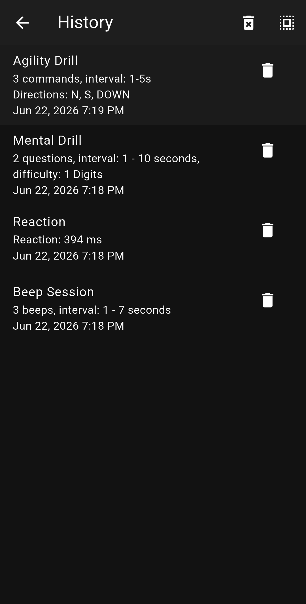
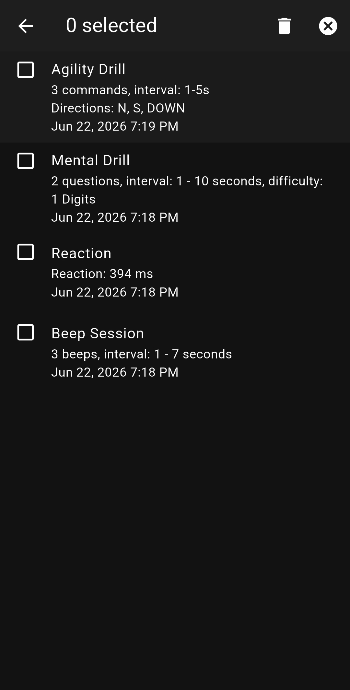

راهنمای جامع مدیریت تاریخچه و رکوردها 📊
ردپای تمرینات، زمانبندی رفلکسها و جزییات کالیبراسیونهای گذشته خودت رو آنالیز، فیلتر یا بهینهسازی کن.


کالیبرهای ذخیره شده (Session Information)
هر تمرینی که در اپلیکیشن بیپ به پایان میرسونی، با جزییات فنی کاملاً متفاوتی در این بخش لاگ میشه تا بتونی روند پیشرفت خودت رو به دقت ارزیابی کنی:
ثبت تمرینات چابکی شامل تعداد دستورات صادر شده (Commands)، فواصل زمانی بین بوقها (Interval) و جهتهای حرکتی تعیین شده (مانند شمال، جنوب، پایین) همراه با زمان دقیق کالیبر.
ثبت چالشهای ذهنی و محاسباتی؛ نمایش تعداد سوالات پاسخ داده شده، بازه زمانبندی پاسخدهی و سطح دشواری تعداد ارقام محاسبات (Difficulty).
مهمترین فاکتور ارزیابی رفلکس؛ ثبت دقیق زمان عکسالعمل شما بر حسب میلیثانیه (ms). هر چقدر این عدد پایینتر باشه، سرعت واکنش سیستم عصبی شما بالاتر رفته.
جلسات استاندارد شنیداری؛ ثبت تعداد بوقهای نواخته شده در طول تمرین و بازه تاخیر فرکانسها به ثانیه.
مدیریت هوشمند و فیلترینگ رکوردها
برای پاکسازی یا بایگانی لاگهای تمرینی، ابزارهای کنترلی ویژهای در نوار ابزار بالایی (Top Bar) تعبیه شده است:
- حالت انتخاب چندگانه (Multi-Select): با کلیک روی آیکون شبکهای سمت راست بالاتصویر، چکباکسها در کنار هر لاگ ظاهر میشن. این حالت بهت اجازه میده بدون اتلاف وقت، چندین جلسه تمرینی خاص رو به طور همزمان انتخاب و سازماندهی کنی.
- حذف سریع تکی: آیکون سطل زباله در سمت راست هر رکورد، به شما امکان میده یک کالیبر ضعیف یا اشتباه رو فوراً و بدون نیاز به ورود به منوهای پیچیده حذف کنید.
- پاکسازی کلی (Clear All History): آیکون سطل زباله در نوار اصلی بالا، هاب تاریخچه رو به صورت کامل تخلیه میکنه تا فضا برای کالیبراسیونها و رکوردهای جدیدِ فصلِ تمرینیِ آینده باز بشه.